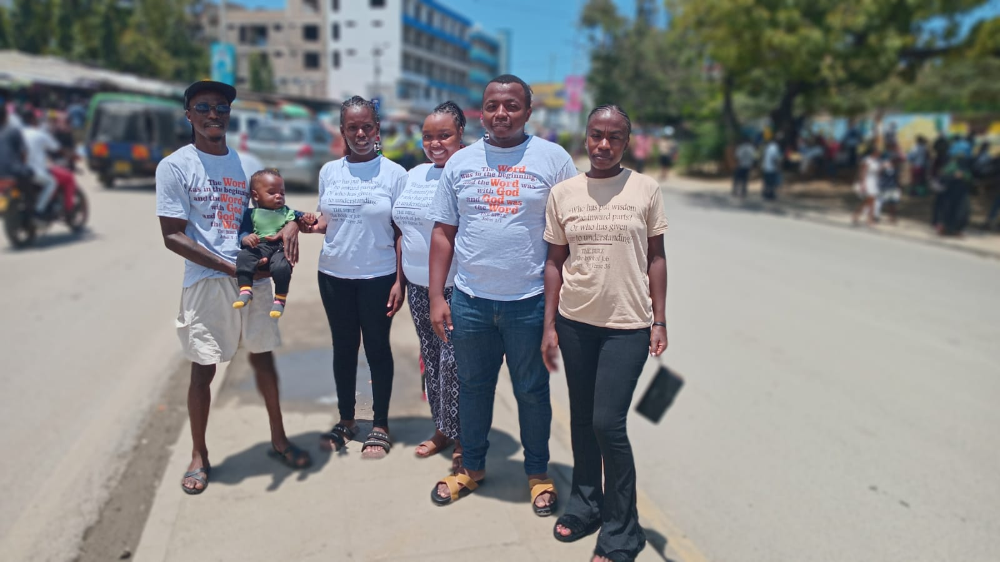
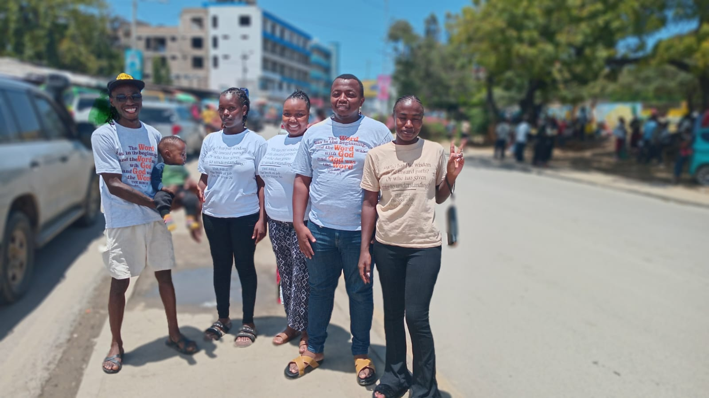
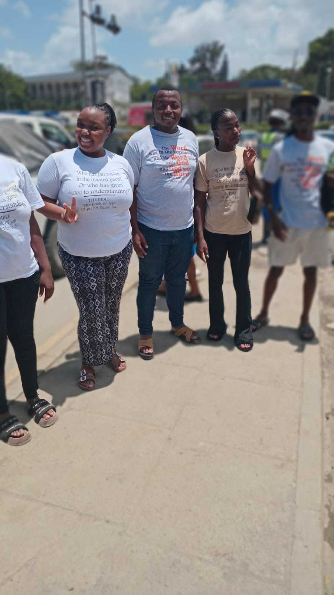
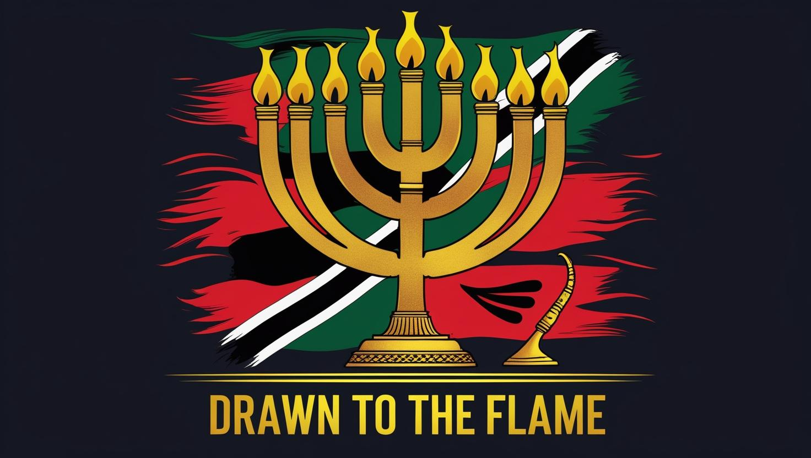

Hospital Ministry
Praying for the sick and seeing miracles of healing and salvation in Mombasa hospitals.
Kingdom Outreach – TEOM Mombasa
"The End of Mombasa shall be turned into Light"
By the grace of God, the revelation of the Haitian Flag and the plumb line of Zechariah is being taken into the highways and hedges of Mombasa. Souls have already surrendered their lives to Jesus Christ!
Director: Gregory Schadt | Field Lead: Vanessa Juma | Coordinator: Chris Beda Oticha
Praying for the sick and seeing miracles of healing and salvation in Mombasa hospitals.


Proclaiming liberty inside the walls of Shimo la Tewa – chains are breaking in Jesus' name.



Every Saturday at Kengeleni Market (11:00–12:00) and Sunday after-service outreaches—preaching in the open air and leading lost souls to the Cross.
A city-wide awakening — uniting churches, prayer warriors, and the community under the prophetic banner of Wings of the Cherubim.
1 Timothy 2:3–4 — "God our Saviour desires all men to be saved and to come to the knowledge of the truth."
Every product is a seed. Our outreach T-shirts fund the mission and spread the Word—worn as a testimony in the streets of Mombasa and beyond.

We are calling five prayer warriors per church to intercede for revival in Mombasa and beyond. Sign up below to join the front lines of spiritual warfare.
Team members can access the full outreach management hub for scheduling, church coordination, financial allocation, and evidence logging.
Open Admin Hub →